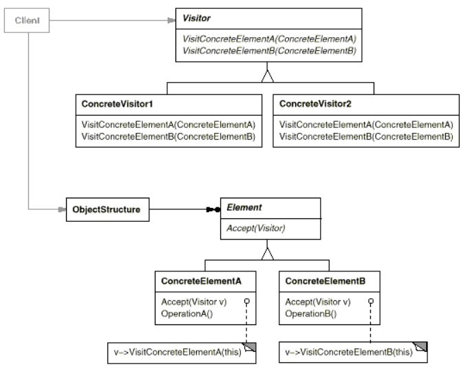

浅谈设计模式: 访问者模式(Visitor)
Table of Contents
实例
访问者模式(Visitor)
目的
表示在对象结构元素上进行的一个操作。访问者模式让你在不改变一个类的前提下，对这个类的元素定义新的操作。
总结
访问者模式(Visitor)结构

组成
- 抽象访问类（Visitor）为结构中的具体元素类（ConcreteElement）类声明一个访问操作。这个操作的名字和签名标识了发送访问请求给访问类的类。以致能让访问者类决定正被访问元素的具体类。然后访问者类能直接通过它的特殊接口访问这个元素。
- 具体访问类（ConcreteVisitor）实现抽象访问类声明的每个操作。每个操作实现部分的算法，而这些部分算法为相应的结构中对象类所定义。具体访问类（ConcreteVisitor）提供这算法的场景和存储它的本地状态。这一状态通常再遍历该结构的过程中积累结果。
- 抽象元素类（Element）定义一个以访问类为参数的
Accept操作。 - 具体元素类（ConcreteElement）实现一个以访问类为参数的
Accept操作。 - 对象结构
- 能枚举它的元素。
- 可以提供允许访问类访问它的元素的上层接口。
- 可以是一个组合或一个如列表或无序集合的集合。
应用场景
- 一个对象结构包含许多不同接口对象类，而且你想对这些对象进行一些依赖于它们具体类的操作。
- 在一个对象结构中，需要对这些对象进行许多不相关不同的操作，而且你想避免以这些操作污染它们的类。访问者模式让你把相关的操作集中起来定义在一个类中。当这个对象结构被许多应用共享时，使用访问者模式让每个应用仅包含需要用到的操作。
- 定义对象结构的类很少改变，但你时常想在这个结构上定义新的操作。改变对象结构类需要重定义对所有访问者类的结构，这潜在会是很大的开销。如果这些对象结构类经常改变，那么可能还是在这些类中定义这些操作。
缺点
- 增加新的元素很困难。每增加一个新的元素将在抽象访问者类（Visitor)中增加一个新的抽象操作，并在每个具体访问类（ConcreteVisitor）中增加相应的操作。
- 破坏封装性。访问者的方法假定具体元素类（ConcreteElement）接口足够强大让访问者对它元素进行操作。因而，这个模式强迫你提供能访问元素内部状态的公开操作，从而导致破坏了它的封装性。